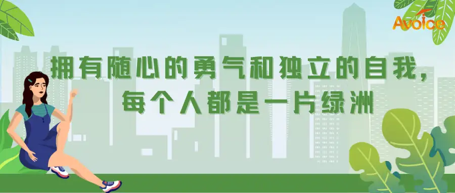
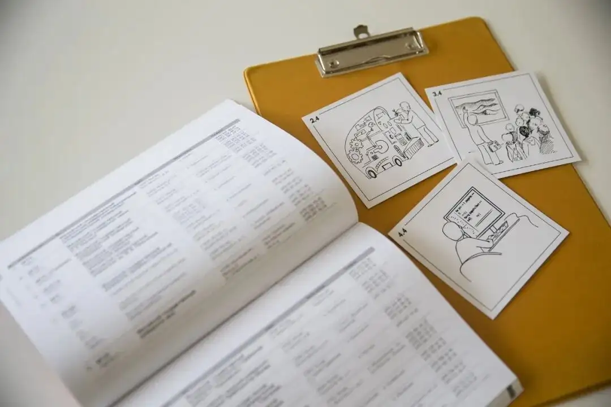

Evelyn是一名拥有园林景观设计知识的职业心理咨询师。她好像很特别，出生之前就被赋予了“拯救他人”的使命。成长途中虽然经历过现实与理想的挣扎，不过好在最终她还是像她的名字一样，成为了一片滋养心灵的“绿洲”。
提起Evelyn，我们更想叫她戈洲
Evelyn有一个饱含意境的本名叫“戈洲”。与她初识之时，我们想了解这个名字背后是不是有什么动听的故事。
“我生长在西北，那里有很多戈壁滩。我的父亲在我还没出生的时候就觉得，不论我是男孩还是女孩，都应该叫戈洲，就像戈壁滩上的绿洲，治愈他人，给人以希望。”
不过戈洲似乎与这个诗意的名字磨合了很长一段时间。虽然她一直明白这个名字的由来和含义，但小时候，她还是常常困扰于因这个名字被误认性别，也不太了解这个名字究竟承载了怎样的力量。
“小时候我会经常给流浪动物投递食物，成长过程中我会希望未来从事一种利他的职业，不过长大之后，当我成为一名职业心理咨询师的时候，我才真正感觉到自己能够胜任这个名字所蕴含的意义。它成为了我的人生信条，并让我在不断的践行中对它理解得更深。”
拥有跟随内心的勇气和独立的自我，
才能成为绿洲
在成为职业心理咨询师之前，戈洲原以为自己会是一名痛苦的园林景观设计师。虽然在高中时就怀揣着学心理学的梦想，但在大学选专业的时候还是被“现实打败了”。
“因为家里不太支持，而且当时心理学在国内就业方向比较模糊，所以后来根据自己喜欢画画的爱好选择了园林景观设计。不过后来我发现爱好和热爱是截然不同的东西，没有天赋和发自内心的热爱让我很难一直坚持走下去。”
好在，这段“痛苦”的弯路在捶打戈洲坚强意志的同时也让她真正确信了自己的热爱，从而坚定地跟随了内心的声音，在本科毕业后远赴纽约修读心理学。在赴美学习的过程中，即使遇到了很多的困难，她也丝毫不觉痛苦，这种发自内心的热爱让所谓的曲折变得熠熠生辉，也让她一步步走近了自己的梦想。
硕士毕业之后，戈洲选择留在美国担任职业心理咨询师。和所有刚踏入社会的孩子一样，工作中所遇到的真实世界比书本里描绘的更加阴郁和黑暗，有时候她似乎感觉被一层灰蒙蒙的东西笼罩着， 强烈的无力感向她袭来。
“在我工作的前四年遇到的困难、挑战和感悟最多。刚毕业没有太多的社会经历，再加之从小被家庭保护得很好，第一份工作却需要直面和接触很多社会的险恶，以至于自己也会受到替代性创伤，也会深陷来访者的经历，感到无力。”
研究调查发现，家暴幸存者平均需要经历7次求助的尝试才能够真正成功地走出困境，顺利得到帮助。但即使在获得帮助之后，部分幸存者还是会因为种种原因不得不回到曾经逃离的环境之中。此外，因为这些有害的关系和经历，她们的三观也会发生深刻的改变。她们会觉得世界非常灰暗，难以相信自己的生活会变好。“这对幸存者本身以及对我们心理咨询师而言都是一种深深的无力感。当时我在面对这些案例时，我的督导也会提醒我不能深陷这样的感觉中。我们在共情的同时，要学会跳出来访者的经历，以更专业的角度去思考她们的问题。”
2020年，疫情第一年，戈洲在美国顺利升任为其所在机构的心理健康诊所主任。然而，升职一年后她选择回国了。这个决定不仅是因为身份问题限制了她在美国的职业发展，也不仅是因为漂泊异乡的思乡之情。对她来说，回国拥有一些特殊的意义。
“我本身是一个很注重家庭关系的人，但如果一直待在父母身边，很难真正实现人格独立。因此，我出国的最初目标是希望通过这种物理的分离体验不一样的生活，同时实现人格独立。在美国的这段时间里，我逐渐觉察到自己在人格上的成熟与独立，我知道最初的那个目标已经慢慢实现了。”
在采访中，我们总能非常直观地感觉到戈洲对于心理学的热爱和这段赴美留学工作的经历对她带来的积极影响。我们相信正是这般追随内心的勇气和这段深刻的人生经历所塑造出的独立自我成就了如戈壁绿洲一样的她。

想要走进他人的内心，常常是从点滴开始
戈洲在美国拥有颇为丰富的心理咨询服务经历。硕士毕业后，她的第一份工作是在纽约为女性做心理咨询服务，为她们重返职场和重建个人生活提供心理辅导和治疗。案例大多以家庭暴力，性侵，人口贩卖为主，它们各自存在又相互交叠。大部分幸存者的性侵经历存在于家庭暴力中。在人口贩卖案例中也会存在性侵的情况。有部分女性是由于希望移民至美国而与不合适的人结婚，从而经历了充满暴力因素的婚姻关系。有部分女性则是被人贩以找工作为借口诱骗，从而遭受了经济剥削及性剥削。因此，对于她们来说噩梦不总是只发生一下子，更多的是接二连三地发生。
她们都有自己的名字，但如果要用一个称呼去概括，我们总是习惯性称她们为“受害者”。不过，在戈洲的眼里，她更愿意称她们为“幸存者”。
“来访者生活中大多有太多不如意的地方，我们希望通过这种身份用语的转变向她们传递更多积极的感受，从点点滴滴开始，挖掘闪光点，改变事情的走向，让她们认为自己做的不错，让她们感受到自己的能量。“
当然，仅仅在称呼上转变是完全不够的。想要真正走进受访者的内心，似乎需要先建立起一份平等且值得信任的内心连接。
戈洲的第二份工作需要面对另一个群体——非裔美国人。这份工作需要戈洲深入当地社区，进入幸存者生活的环境。由于成长环境的巨大不同，幸存者们与戈洲有着完全不同的生活经历且深受代际性创伤。在这份工作经历中，戈洲需要不断尝试了解不同的人，与他们共情并建立连接。
“大家都那么不一样，但其实大家对于这种连接都有一种本能的渴望。他们对于你所给予的关注、支持和赞美会非常有利于连接的建立。曾经的我更关注技巧和疗法，但这些经历让我明白与人建立平等的连接是治疗的基础。”
治愈他人，是让他们有能力治愈自己
戈洲常做情绪管理、婚恋关系、个人成长及人际关系处理的个体咨询。在这四个领域中，她总认为个人成长才是每个人最终的目的。
“这四个领域其实都相互存在联系。不过相较于个人成长来说，其他三个领域大多在人生的不同阶段会成为一个人关注的重点，但其最终都是为了达到个人成长的目的，因此可以说个人成长涵盖了其他三个领域。在我所接触的案例中，当受访者没有在其他三个领域存在较大困扰时，他们的目的往往是希望了解自己更多一点以帮助自己更好地成长。”
而在她所接触到的不同群体之中，当谈及心理问题的归因，她也认为：“即使他们的问题各不相同，但从心理学角度而言，一般的归因都是回归到我们自己。你本来的样子，你的特质，你的成长环境，融合成了你，从而塑造了你的行为逻辑。”
谈到这里的时候我们好像渐渐发现： 在戈壁滩中使人重获新生的解药不仅是那片阴郁的绿洲，更是那个充满信念不断自愈的灵魂。对戈洲来说，治愈他人，常常是帮助他们有能力治愈自己。
这句话，尤其是对女孩们来说。
记得把自己衣柜里的衣服穿得更好看
“在帮助女性认识和重塑自身价值的时候，我们总是希望能够帮助她们挖掘自己内心的力量，支持她们成为更稳定更独立的个体，更多地从过去的经历中自我赋能。就好像女孩子们总是想要出去买新衣服，但其实衣柜里已经有很多衣服了。”
戈洲在谈到女性自我成长时，用了一个让我们印象深刻的比喻。
“社会对女性的限制和束缚以及女性自身对种种束缚的内化常常是导致女性痛苦的根本因素。我们需要花很长的时间跟外界的束缚做斗争，也需要跟自己做斗争。 在不断的冲破外在的限制之时，也要去探索如何接纳内在的自我，接受我不可避免的被它们牵制着。”
如果无法处理好自我，不知如何与自己和解，则或许会陷入自我否定的困境之中。
“例如，当我们在鼓励家暴幸存者她们其实有力量去应对家庭暴力的时候，大部分幸存者们依然会陷入深深的自责中。她们会认为自己明明拥有这份能量，为什么之前却没有做好。但其实即使我们有这样的认知，也不可避免会被内在或外在的各种因素所牵制。事情已经发生，我们更需要的是和过去的自己和解，把握自己的能量，着眼于更加明亮的未来。”
女性心理成长的更多话题
关于戈洲自己的故事就暂时先讲到这里了，接下来的故事是和我们的。
距离她上一次做纯粹与女性群体相关的心理咨询工作已经过去了好几年。像是一种经历成长后的回归，如今戈洲怀揣着那颗治愈他人的初心和更加成熟的经历成为了Avoice的心理咨询志愿者。她希望以自己的方式，帮助女性塑造更好的自我。我们也借此机会了解到了更多有关女性心理成长的话题。
1
女性婚恋关系中的自我保护和创伤修复
与其说如何在婚恋关系中保护自己和预防伤害，我更愿意说是如何在婚恋关系中坚持自己，这是一个更加正向的强调。在一段关系中，当我们发现不舒适的时候，即使外界不认同，我们也不能忽略这种感受。我们需要在关系中相信自己的第六感并想办法将不舒服的感觉表达出来，去和伴侣交流。暴露问题能够帮助我们更好的设定边界。此外，我们也可以寻求专业的心理咨询以帮助我们更好的理解情况。”
女性相较于男性来说本身就更容易受到关系创伤。这种创伤可能来源于早年与养育者关系，也可能来源于亲密关系。眼动脱敏疗法对于治愈这样的创伤十分有效。在这样的疗法下，我们首先需要重述以调动过往的创伤，在不断重述中从专业的角度帮助幸存者重新理解这段经历，以至对这段创伤脱敏。幸存者或许仍然会对过往经历有自然的反应，但不会再像以前一样强烈了。脱敏后，幸存者将有更多的心理能量去自我修复，重新定义这段经历。
2
艺术疗愈对女性的作用
一方面是表达，另一方面是赋能。不论是学习什么艺术，它就像是在学习不同的语言，不同的表达方式。语言本身有局限性，而艺术，就比如舞蹈，它能够用肢体语言直观的传递信息，这种通过身体的表达方式对我来说是一件畅快的事，更不要说运动本身就会带来很多幸福的荷尔蒙呀！此外，在艺术创作的过程中我们能够通过自己的特点，塑造出不同的作品。这个创作不一定具有艺术性，但它对自己本身有着非同凡响的意义，是我们自己的烙印，能够实现自我赋能。
最后，每个人都要做自己的绿洲呀。
李戈洲
Yeshiva University心理咨询硕士毕业
纽约州执证心理咨询师（LMHC）
受训于Milton Erickson Foundation和William Alanson White Institute
擅长行为认知疗法（CBT）、辩证行为疗法（DBT）、眼动脱敏再处理疗法（EMDR）和艾瑞克森催眠疗法。
曾任纽约市Community Counseling and Mediation心理咨询诊所主任(clinical director)及督导（supervisor）
微信工作联系：evelynlilmhc
采访提纲 &采访 | Esther & Dolcia
访谈主笔 & 校改 | 赛儿 & 张妮
排版 & 封面制作 | Zoey
图片来源 | Pixabay